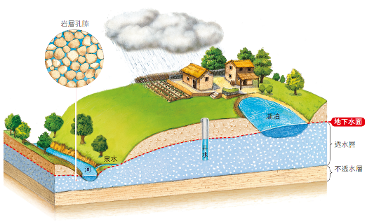
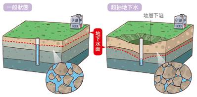
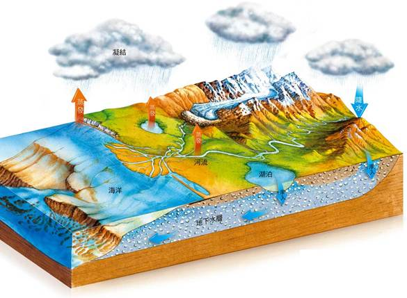
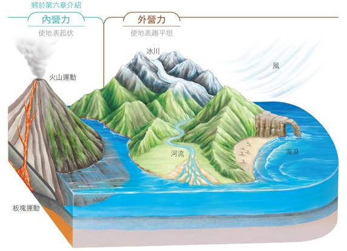
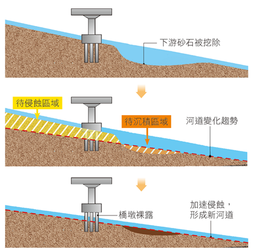
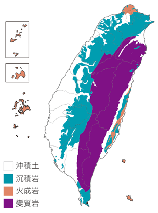
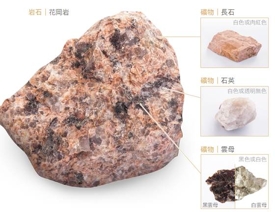

5-1 我們的地球（一）
水體分布比例 ｜ 各種水體特性 ｜ 地下水成因與水面
焦點一：地球上水體的分布與比例
1. 水球地球：地球表面約有 71 ％以上的面積被水覆蓋，全球總水量極為龐大，但鹹水與淡水分布極不均勻。
2. 各種水體所占比例與人類使用情形比較表：
| 水體種類 |
占全球總水量比例 |
特徵與人類利用情形 |
| 海洋 |
約 97％ |
主要為鹹水（無法直接飲用或灌溉）。 |
| 冰川 |
約 2％ |
占淡水總量最高（約 2/3 以上），但多凍結於極地與高山，不易直接利用。 |
| 地下水 |
約 1％ |
為人類可直接利用的重要淡水資源，主要來源為雨水滲透補注。 |
| 河流與湖泊 |
小於 0.01％ |
地表水，是人類飲用、灌溉、民生用水最主要來源。湖泊依含鹽量可分淡水湖與鹹水湖。 |
焦點二：地下水的成因與地下水面
1. 地下水成因：降雨時雨水滲入地下，滲透至不透水層（如質地緻密的頁岩層）時開始向上累積，填充岩層中的孔隙。
2. 地下水面特徵：地下水體的頂部界線稱為地下水面，其起伏通常 會 隨地表地形高低而起伏（填會或不會）。雨季補注多時水面上升，乾季時水面下降。
3. 井水出水條件：水井的井底深度必須低於地下水面，才能汲取地下水。若在山谷或低窪處與地表相交，則會湧出形成泉水或補注河湖。

▲ 地下水面、透水層與不透水層構造示意圖
5-1 我們的地球（二）
超抽地下水危害 ｜ 地層下陷 ｜ 全球水循環歷程
焦點三：超抽地下水與地層下陷的環境災害
1. 地層下陷成因：若抽取地下水的量遠超過雨水滲入地下的補注量，岩層孔隙中的水壓消失，上方土石重力將岩層孔隙壓縮密實，導致 地層下陷。
2. 引發之後續災害：沿海低窪地區發生海水倒灌、積水不退、土壤與地下水 鹹化，建築物與堤防傾斜龜裂。
3. 不可逆性：當發生嚴重地層下陷後，即使完全停止抽取地下水，岩層孔隙已被壓實，地層 無法 恢復原狀！（填可以或無法）

▲ 超抽地下水導致岩層孔隙壓密與地層下陷示意圖
焦點四：大自然的水循環（Hydrological Cycle）
1. 水的旅程：陸地上的淡水主要來自降雨。地表水流入河湖海洋，並不斷進行蒸發與蒸散。
2. 循環三大關鍵步驟：
(1) 蒸發與蒸散：海面與地表水吸收太陽熱能 蒸發 為水氣，植物根部吸收的水分由氣孔 蒸散 入空氣中。
(2) 凝結：水氣上升至高空遇冷，凝結 形成雲或霧（放熱）。
(3) 降水：雲滴凝結增大後降落回地面或海洋，形成雨、雪、冰雹等 降水。

▲ 全球水循環：蒸發、蒸散、凝結、降水與逕流
5-1 隨堂實戰評量（一）
水體含量比例 ｜ 超抽地下水災害 ｜ 水循環階段判讀
（ C ）
1.
下列哪一種水體為世界上比例最高的淡水資源？
(A) 河流
(B) 湖泊
(C) 冰川
(D) 地下水
💡 【解題核心精析】：全球總水量中鹹水占約 97％，淡水僅占約 3％。在淡水資源中，以冰川占最多（約占淡水總量的 68％～70％，即全球總水量之 2％）；地下水次之（約 30％）；河流與湖泊等人類最常使用的地表水僅占淡水總量不到 1％。
（ B ）
2.
超抽地下水最常造成下列哪一項地質災害出現？
(A) 山崩
(B) 地層下陷
(C) 旱災
(D) 沙漠化
💡 【解題核心精析】：過度抽取地下水會使沉積岩層孔隙中的承載水壓銳減，岩層失去支撐後受上方土石重力壓迫，孔隙壓縮密實，導致地層下陷，並常伴隨海水倒灌與地下水鹹化。
（ C ）
3.
關於大自然「水循環」之敘述，下列何者完全正確？
(A) 水循環的終點是降水
(B) 冰川被冰凍不會參與水循環
(C) 水循環主要包含蒸發、蒸散、凝結、降水等步驟
(D) 降水時會大量吸熱，可調節地表氣候
💡 【解題核心精析】：(A) 水循環是全球封閉且連續不斷進行的循環過程，沒有終點；(B) 冰川融化會注入河流或昇華蒸發，均參與水循環；(D) 水分蒸發與蒸散時需要吸收熱量，水氣凝結降水時則是放出熱量。
📌 核心觀念統整：水體比例與水循環盲點掃雷
• 淡水最多是冰川，但因位處極地高山，人類最主要利用的淡水來源是河流、湖泊與地下水。
• 地下水不是地下暗河：地下水主要儲存在砂岩、礫岩等岩層的細小「孔隙」中，像吸滿水的大海綿。
• 地層下陷不可逆：一旦孔隙被壓實密合，就算注入再多水分也無法讓地層膨脹復原！
5-1 隨堂實戰評量（二）
井水觀測判讀 ｜ 透水層特性 ｜ 地下水變動 ｜ 沿海下陷實例
（ A ）
4.
右圖為甲、乙、丙、丁、戊五口井與地下水面的示意圖，請問哪幾口井中會有水？
(A) 甲、乙、戊
(B) 乙、丙、丁
(C) 丙、丁、戊
(D) 乙、丁、戊
💡 【解題核心精析】：水井欲取得井水，其井底深度必須低於地下水面，孔隙水方能湧入井管內。由示意圖可知：甲、乙、戊三口井的井底均深入地下水面以下，故井中有水；丙、丁兩口井井底高於地下水面，為乾井無水。
（ D ）
5.
若要形成一個良好的地下透水含水層，地層應具備下列哪些特性？
甲. 岩層孔隙大；乙. 質地緻密；丙. 透水性佳；丁. 不透水
(A) 甲乙
(B) 乙丙
(C) 乙丁
(D) 甲丙
💡 【解題核心精析】：良好的透水含水層（如砂岩層、礫岩層）必須具備孔隙大（甲）能儲存足量水分子，且孔隙互相連通使透水性佳（丙）；質地緻密、不透水（乙、丁）者如頁岩層，為阻隔水流的不透水層。
（ A ）
6.
有關「地下水」的流動與性質敘述，下列何者錯誤？
(A) 地下水深藏在地底，絕不可能自行流出地表
(B) 地下水面的高低會隨季節降雨與地形不斷變動
(C) 雨季時雨水大量滲透，地下水體的範圍會增大
(D) 地下水可與相連的井水、河水或湖泊互相調節互補
💡 【解題核心精析】：(A) 當地下水面與低窪地形相交（如山谷），地下水會自然溢出形成泉水、湧泉或補注河流湖泊；受壓地下水井口低於受壓水面時亦會形成自噴井。
（ D ）
7.
臺灣雲林、嘉義與屏東沿海地區地層下陷日益嚴重的主要原因為何？
(A) 颱風帶來的瞬間豪雨沖刷
(B) 久旱不雨造成表土乾燥脫水
(C) 斷層錯動頻繁引發強烈地震
(D) 沿海養殖業過量超抽地下水
💡 【解題核心精析】：臺灣西南部沿海地區因養殖漁業大量且長期超抽地下水，抽取量遠大於雨水入滲補注量，導致地層深處孔隙嚴重壓密下陷。
5-2 地表的改變與平衡（一）
地質作用分類 ｜ 內營力 vs 外營力 ｜ 風化、侵蝕、搬運、沉積
焦點一：地表高低起伏的兩大營力比較
1. 內營力與外營力的對抗：地貌隨時受到地球內部與外部兩種力量的雕塑塑造。
| 營力類別 |
地質作用與來源 |
地質營力媒介 |
對地表形態的主要影響 |
內營力
(內部動力) |
火山活動、造山運動、岩層褶皺與斷層 |
地球內部熱能、板塊運動 |
造陸造山，使地表產生 高低起伏（形成高山、裂谷、海溝）。 |
外營力
(外部雕塑) |
風化、侵蝕、搬運、沉積作用 |
太陽輻射熱能、重力、河流、風、冰川、海浪 |
削高填低，削平山陵填補低地，使地表 趨於平坦。 |

▲ 內營力（火山與造山）與外營力（水與風雕塑）相互消長示意圖
焦點二：外營力的四大基本地質作用
| 地質作用 |
核心定義與實例特徵 |
| 風化 作用 |
岩石在原地受空氣、水分、陽光（熱脹冷縮）、生物（植物根伸展）影響，成分改變（化學風化）或崩解破碎疏鬆（物理風化），由大顆粒變成小顆粒，最終發育成 土壤。 |
| 侵蝕 作用 |
岩石或其風化碎屑受流水、冰川、風、海浪等外在動能沖刷磨蝕，自原處剝離脫落的過程（如瀑布後退、峽谷下切）。 |
| 搬運 作用 |
風化與侵蝕產生的岩石碎屑，藉由流水、冰川、風等外力媒介運送移動至其他地方的過程（流水搬運會磨圓礫石）。 |
| 沉積 作用 |
當外營力流速減慢、搬運力量減弱，岩石碎屑沉降堆積下來的過程（如河流下游泥沙淤積成三角洲、沖積扇）。 |
5-2 地表的改變與平衡（二）
四大外營力地貌對照 ｜ 侵蝕與沉積平衡 ｜ 海岸線進退動態
焦點三：改變地表地貌的四大外營力地形對照
1. 主要外營力媒介：河流是全球最主要且分布最廣的外營力。
| 外營力媒介 |
侵蝕作用地形（削高） |
沉積作用地形（填低） |
河流 (流水)
最主要營力 |
下切侵蝕成 V 型谷、峽谷（太魯閣）、瀑布、河床巨石。 |
出山口形成沖積扇；下游形成氾濫平原；出海口堆積成 三角洲、沙洲。 |
| 冰川 |
塑性流動磨蝕，形成寬平谷底的 U 型谷、冰斗、角峰。 |
冰融化時堆積雜亂無章的冰磧石（無淘選分選特性）。 |
| 風力 |
挾帶細沙磨蝕迎風面，形成多角稜面的風稜石、風蝕蕈狀石。 |
風力減弱處細沙沉降形成沙丘、黃土高原。 |
| 海浪與海流 |
拍擊岸邊岩壁形成海蝕崖、海蝕洞、海蝕門、海蝕平臺。 |
沿岸流與碎浪沉積形成 沙灘、沿岸沙洲（潟湖外圍）。 |
焦點四：河道與海岸線的動態平衡關係
1. 河流的平滑平衡剖面：河床突起處侵蝕加劇夷平，凹陷處沉積填補，長期將趨於平滑平衡。
2. 侵蝕與沉積對海岸線進退的影響：
• 侵蝕 ＞ 沉積：海浪侵蝕大於泥沙堆積（如水庫攔沙使出海口沙源減少），海岸線向陸地 後退。
• 侵蝕 ＝ 沉積：泥沙補注量與被波浪帶走量相等，海岸線達到動態平衡，形狀穩定。
• 侵蝕 ＜ 沉積：上游濫墾土石流失使入海泥沙大增，出海口沉積堆高，海岸線向海 前進（生成海埔新生地）。

▲ 河道變化：下游濫採砂石造成侵蝕基準面下移，引發嚴重下切掏空橋墩
5-2 隨堂實戰評量（一）
主要外營力 ｜ 化學風化作用 ｜ 侵蝕沉積與橋墩 ｜ 磨圓礫石成因
（ C ）
1.
下列何種外營力是地表分布最廣、侵蝕與塑造地貌最主要的力量？
(A) 冰川
(B) 風力
(C) 河流（流水）
(D) 海浪
💡 【解題核心精析】：在地球上大多數氣候濕潤地區，河流（流水）的侵蝕、搬運與沉積作用分布面積最廣，是形塑地貌景觀最普遍、最主要的地質營力。
（ B ）
2.
空氣中的氧氣與水將岩石中的鐵質礦物氧化，產生紅褐色的氧化鐵粉末，請問此過程屬於下列哪一種地質作用？
(A) 侵蝕作用
(B) 風化作用
(C) 搬運作用
(D) 沉積作用
💡 【解題核心精析】：岩石在原地與大氣中的氧氣、水發生化學反應，改變了礦物的化學成分與組織構造，使其由堅硬變為脆弱粉碎，屬於化學風化作用。
（ C ）
3.
有關「侵蝕作用」與「沉積作用」的敘述，下列何者錯誤？
(A) 兩種自然力皆屬於地球外部的作用力（外營力）
(B) 沉積作用是搬運力量減弱時發生的過程
(C) 河床上橋墩裸露的主要原因是上游濫採砂石
(D) 長遠看來，兩者的綜合作用會使地表更加趨於平坦
💡 【解題核心精析】：(C) 若在橋墩下游或當地河床濫採砂石，會使河道局部加深、侵蝕基準面相對降低，導致上游流水流速加快並加劇向下侵蝕，進而掏空沖刷橋墩基底使其裸露危險。
（ C ）
4.
在河流中下游或野外常可見到圓滑飽滿的「鵝卵石（礫石）」，主要是由下列何項地質營力所造成？
(A) 風化作用原地崩裂
(B) 冰川侵蝕磨蝕
(C) 流水搬運碰撞摩擦
(D) 風力搬運吹拂
💡 【解題核心精析】：岩石碎屑落入河流後，在流水搬運過程中隨水流翻滾，碎屑顆粒之間不斷相互碰撞、摩擦，逐漸將尖銳的稜角磨蝕修圓，最終形成圓滑的卵石與礫石。
📌 觀念辨正：風化 vs 侵蝕 的最大關鍵在於「是否位移」
• 風化作用（原地）：岩石乖乖待在原地，被陽光熱脹冷縮撐破、水結冰膨脹撐破、植物根撐破、酸雨氧化溶蝕。沒有移動！
• 侵蝕作用（剝離）：有流動的媒介（河水、海浪、強風、冰川）主動刮削沖刷，把岩石碎屑從原處剝離刮走！
5-2 隨堂實戰評量（二）
海岸線進退變化 ｜ 冰川U型谷剖面 ｜ 風化作用比較 ｜ 河流縱剖面分析
（ A ）
5.
若在河流上游山區過度濫墾濫伐，造成水土流失嚴重，使得河流攜帶進入出海口的泥沙量大增，則該處海岸線會有何變化？
(A) 海岸線向海洋方向前進，形成海埔新生地
(B) 海岸線向內陸方向退縮
(C) 海岸線維持穩定不變
(D) 海岸線完全消失沉入海底
💡 【解題核心精析】：大量泥沙入海使出海口的沉積作用遠大於侵蝕作用，泥沙淤積堆積加高並向外延伸，使海岸線向海洋方向前進（外推），增加沙洲與海埔新生地。
（ C ）
6.
下列四種河谷或山谷剖面示意圖中，何者最可能是由「冰川侵蝕」所塑造的地形？
(A) 深窄 V 型谷
(B) 陡峭階梯谷
(C) 寬底 U 型谷
(D) 平坦波狀谷
💡 【解題核心精析】：冰川體積厚重龐大且具塑性流動特性，對谷底與山谷兩側山壁進行全面性的挖蝕與磨蝕，形成底部寬闊平坦、兩壁陡峭的U 型谷（圖 C）；(A) 為流水下切形成的 V 型谷。
（ C ）
7.
下列何者對地表造成的地質作用，與其他三者的地質機制「不同」？
(A) 水在岩石裂隙結冰膨脹將岩石撐破
(B) 植物根部在岩石裂縫生長將岩石撐裂
(C) 河流長年沖刷河道，使河床不斷加深
(D) 陽光照射使岩石表面礦物熱脹冷縮而剝落
💡 【解題核心精析】：(A)、(B)、(D) 皆為岩石在原地受到物理或生物機械力量碎裂，屬於風化作用；(C) 為流水動能主動自河床剝離岩石顆粒，屬於侵蝕作用。
（ D ）
8.
如圖是一條河流由源頭到出海口的縱剖面示意圖，則下列關於各河段敘述何者錯誤？
(A) c 處沉積作用顯著，容易發現被河水磨圓的細卵石與泥沙
(B) a 處由於地形坡度最陡峭，因此流水侵蝕力量最強
(C) 由 a 到 c 處，河流的沉積顆粒由粗變細
(D) b 處位於河流中游，河床中沉積物應以極細微的泥沙為主
💡 【解題核心精析】：(D) 河流從源頭 a（上游）到出海口 c（下游），坡度由陡變緩，流速由快變慢，沉積顆粒由大變小。a 處多巨石大岩塊；中游 b 處多鵝卵石與粗砂；只有到了出海口下游平緩處 c，流速極慢時才會大量沉積細沙與黏土。故 (D) 敘述錯誤。
5-3 岩石與礦物（一）
三大岩類成因 ｜ 火成岩冷卻速率與結晶 ｜ 沉積岩顆粒分類
焦點一：地質岩石三大成因分類
1. 岩石劃分基準：地質學上主要依據岩石的形成過程（成因）將岩石劃分為三大類：
| 岩石大類 |
主要成因與地質環境 |
代表性常見岩石與特徵說明 |
| 火成 岩 |
地下深處岩漿上升冷卻凝固形成。
• 噴出岩：噴出地表快速冷卻。
• 深成岩：地下深處緩慢冷卻。 |
• 地表快速冷卻：結晶細小，如 玄武 岩（深黑氣孔）、安山岩（灰褐火山岩）。
• 地底緩慢冷卻：結晶粗大清晰，如 花岡 岩（長石+石英+雲母）。 |
| 沉積 岩 |
岩石風化碎屑物在水底或陸地堆積，歷經漫長歲月的壓密與膠結硬化而成（常具層理與化石）。 |
• 碎屑沉積岩（依顆粒大到小）：礫岩 → 砂岩 → 頁 岩。
• 化學與生物沉積岩：石灰 岩（碳酸鈣遇酸起泡，水泥原料）、鹽岩（易溶於水）。 |
| 變質 岩 |
原有岩石深埋地底高溫、高壓環境，礦物重新結晶排列，成分與結構產生質變。 |
• 頁岩受熱變質成 板 岩。
• 石灰岩受熱重結晶成 大理 岩（方解石結晶粗）。
• 花岡岩受壓變質成 花岡片麻 岩（具片麻狀條紋）。 |
焦點二：火成岩與沉積岩的分類鑑別特徵
【火成岩：冷卻速度 vs 結晶顆粒】
| 岩石 | 冷卻地點 | 冷卻速率 | 結晶顆粒 |
|---|
玄武岩
安山岩 | 噴出地表 | 快速 | 較 小
(肉眼難辨) |
| 花岡岩 | 地下深處 | 緩慢 | 較 大
(顆粒分明) |
【沉積岩：碎屑顆粒大小與特徵鑑別】
| 種類 | 顆粒大小 | 肉眼與觸感特徵 |
|---|
| 礫岩 | 最大 (＞2mm) | 肉眼清晰可見粗大磨圓卵石 |
| 砂岩 | 中等 (1/16~2mm) | 摸起來有明顯粗糙顆粒感 |
| 頁岩 | 最小 (＜1/16mm) | 觸感平滑緻密，易沿薄層剝落 |
| 石灰岩 | 不固定 | 主要含碳酸鈣，遇稀鹽酸劇烈起泡 |
5-3 岩石與礦物（二）
臺灣三大岩類分布 ｜ 岩石與礦物關係 ｜ 常見礦物特性與應用
焦點三：臺灣三大岩類的地理分布
1. 臺灣本島與離島岩石分布規律：
• 東部地區（中央山脈東翼）：主要為 變質岩（如太魯閣大理岩、中央山脈板岩與片岩）。
• 西部麓山帶與平原：主要為 沉積岩（厚層沉積之砂岩、頁岩、礫岩）。
• 北部大屯與基隆火山群：主要為 火成岩（安山岩）。
• 離島澎湖群島：基性熔岩噴發形成壯麗柱狀節理之 玄武岩。
• 金門、馬祖：大陸邊緣侵入結晶之 花岡岩。

▲ 臺灣岩石分布圖：西部沉積岩、東部變質岩、北部與離島火成岩
焦點四：礦物的定義與常見生活礦物
1. 礦物的定義：自然界天然產出且原子排列規則的固體 無 機物（填有或無），具有特定均勻的化學成分與晶體構造。
2. 岩石與礦物的關係：岩石是由一種或多種 礦物 混合聚合而成。因此岩石沒有固定的化學式與熔點。
3. 花岡岩三大造岩礦物：由 長石（肉紅或白色）、石英（透明半透明） 與 雲母（黑褐色發亮薄片） 組成。

▲ 花岡岩分解圖：長石、石英與黑雲母
• 長 石：地殼中最豐富的礦物，製造陶瓷的主要原料。
• 石英：硬度大，為製造玻璃與半導體晶圓之主要原料。
• 方解石：碳酸鈣主成分，滴稀鹽酸冒泡，雙折射光學特性。
• 雲母：片狀解理極佳，耐熱絕緣性好。
• 寶石：產量稀少、光澤美麗、硬度高耐磨損之礦物（如鑽石、紅寶石）。
5-3 隨堂實戰評量
三大岩類劃分 ｜ 火成岩脈判讀 ｜ 澎湖熔岩台地 ｜ 結晶冷卻速率 ｜ 酸雨建材選擇
（ C ）
1.
地質學家將「礫岩」、「安山岩」、「大理岩」三種岩石劃分至不同類別，主要依據下列何種差異？
(A) 岩石的整體密度大小不同
(B) 岩石外觀顏色的深淺不同
(C) 岩石的形成過程與成因不同
(D) 組成岩石碎屑顆粒的大小不同
💡 【解題核心精析】：地質學上將岩石劃分為火成岩（如安山岩）、沉積岩（如礫岩）與變質岩（如大理岩）三大類，其根本劃分標準為岩石形成時的地質作用成因與環境（形成過程）。
（ B ）
2.
岩漿侵入地層或岩層裂隙中，冷卻凝固形成的火成岩地質構造稱為岩脈。請問在岩脈中較「不可能」含有下列哪一種岩石？
(A) 花岡岩
(B) 頁岩
(C) 玄武岩
(D) 安山岩
💡 【解題核心精析】：岩脈是高溫地下岩漿侵入冷卻形成的火成岩構造；(B) 頁岩是泥質碎屑在水底壓密膠結形成的沉積岩，不可能在岩漿冷凝產物中出現。
（ A ）
3.
臺灣著名的澎湖群島由熔岩冷凝台地構成，其最主要的基底岩石種類為何？
(A) 玄武岩
(B) 安山岩
(C) 花岡岩
(D) 大理岩
💡 【解題核心精析】：澎湖群島是由地下基性岩漿經地表裂隙平緩湧出冷卻形成的熔岩方山台地，主要岩石為具有發達柱狀節理與氣孔構造的玄武岩。
（ B ）
4.
有關「岩石」、「礦物」與「寶石」的性質與成因敘述，下列何者錯誤？
(A) 礦物是指天然產出且原子排列規則的固體無機物
(B) 火成岩中的礦物結晶顆粒大小與岩漿冷卻速度無關
(C) 寶石通常是產量特別稀少、質地耐磨且光澤美麗的礦物
(D) 自然界中的岩石通常是由一種或多種礦物混合聚合而成
💡 【解題核心精析】：(B) 火成岩的結晶顆粒大小與冷卻速率關係極大：冷卻越緩慢（地下深處），結晶顆粒越大（如花岡岩）；冷卻越快（地表），結晶顆粒越細小（如玄武岩、安山岩）。
（ D ）
5.
如果要在一個工業污染、酸雨相當嚴重的現代城市建造一座歷史紀念石碑，下列何種岩石「最不適宜」作為戶外建材？
(A) 花岡岩
(B) 安山岩
(C) 砂岩
(D) 大理岩
💡 【解題核心精析】：大理岩由石灰岩高溫高壓變質而成，主要成分為碳酸鈣（$\text{CaCO}_3$），極易與酸雨反應溶解起泡腐蝕，雕刻細節迅速風化剝落毀損，最不適合作為戶外石碑建材。
第 5 章 核心重點整理（一）
5-1 我們的地球 ｜ 5-2 地表的改變與平衡 核心挖空檢測與地質作用總歸納
5-1 我們的地球 核心精華檢測
1. 水體分布：地球表面有 71 ％面積被水覆蓋，其中約有 97 ％儲存於海洋鹹水中。
2. 淡水存量：地球上淡水存量最多的是凍結在極地高山的 冰川（約占總水量 2％），人類生活與灌溉能直接取用的是河流水、淡水湖與 地下水。
3. 超抽地下水危害：當抽取量大於降水補注量時，岩層孔隙受重力壓實引發 地層下陷，造成沿海海水倒灌、積水不退，且完全停止抽水後 無法 恢復原狀！
4. 水循環歷程：地表水經 蒸發 與植物 蒸散 上升，在高空遇冷 凝結 成雲，最後藉由 降水 回到陸地與海洋，永不停息。
5-2 地表的改變與平衡 核心精華檢測
1. 地貌營力比較：內營力源自地熱與板塊運動，使地表 高低起伏；外營力藉流水、風、冰川、海浪削高填低，使地表趨於 平坦。
2. 外營力四大地質作用核心定義：
| 地質作用 | 作用過程與關鍵判斷指標 |
|---|
| 風化 作用 | 岩石在原地受空氣、水、陽光、生物影響，漸漸崩解破碎或成分改變化為土壤。 |
| 侵蝕 作用 | 岩石或風化物受流水、冰川等外營力動能沖刷，自原處剝離脫落。 |
| 搬運 作用 | 風化與侵蝕產生的岩石碎屑，藉外營力運送至其他地方（流水滾動磨圓礫石）。 |
| 沉積 作用 | 流速減慢、動能減弱時，岩石碎屑暫時或永久堆積下來（如沖積扇、三角洲）。 |
3. 海岸線動態平衡：入海泥沙量＝海浪帶走泥沙量時達到平衡；當入海泥沙因上游水土流失而大增時，出海口沉積大於侵蝕，海岸線向海 前進（生成海埔新生地）；出海口沙源減少時，海岸線則向陸地 後退。
第 5 章 核心重點整理（二）
5-3 岩石與礦物 核心挖空檢測 ｜ 三大岩類生成與常見造岩礦物總體系
5-3 岩石與礦物 核心精華檢測
1. 三大岩類生成方式與實例對照表：
| 岩石大類 |
生成地質環境與成因 |
常見岩石實例與代表 |
| 火成 岩 |
由地下高溫岩漿冷卻凝固而形成。
• 深處冷卻慢：結晶 大。
• 地表冷卻快：結晶 小。 |
• 花岡岩（地下深處結晶大）。
• 玄武岩（地表噴出快速冷卻，澎湖）。
• 安山岩（大屯火山群）。 |
| 沉積 岩 |
岩石碎屑沉積於水底或陸地，經漫長時間的壓密與膠結硬化而成。 |
• 礫岩（顆粒最大，＞2mm）。
• 砂岩（顆粒中等，摸起來粗糙）。
• 頁 岩（顆粒最細，觸感平滑）。
• 石灰 岩（碳酸鈣主成分，遇酸起泡）。 |
| 變質 岩 |
深埋地底的原有岩石，經高溫與高壓作用，礦物重新結晶排列，成分與結構發生變化。 |
• 頁岩受變質 → 板 岩。
• 石灰岩受變質 → 大理 岩。
• 花岡岩受變質 → 花岡片麻 岩。 |
2. 岩石與礦物關係：岩石是由一種或多種 礦物 聚合而成，無固定成分；礦物則是天然產出且原子排列規則的固體 無 機物，具特定物理與化學性質。
3. 常見礦物用途記憶：長石 製造陶瓷原料；石英 製造玻璃與半導體晶圓原料；方解石遇稀鹽酸會劇烈產生 二氧化碳 氣泡；特別稀少美觀耐磨者稱為 寶石。
🧭 全章核心概念網絡思維導圖
地球環境 ── 水圈（5-1）：71％水覆蓋（鹹水 97％、冰川 2％、地下水 1％） → 水循環（蒸發/蒸散 → 凝結 → 降水）
└── 岩石圈（5-2、5-3）：內營力（起伏） vs 外營力（平坦，河流/風/冰川/海浪） → 風化/侵蝕/搬運/沉積
└── 三大岩類（火成岩、沉積岩、變質岩） ＋ 造岩礦物（長石、石英、雲母、方解石）